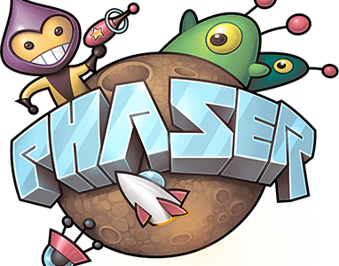

Ile frameworksjs phaser
Dans ce nouveau cours toujours consacré à cet excellent Framework HTML 5 JavaScript vous l’avez bien entendu deviné il s’agit du Framework Phaser que j’adore parce qu’il vous permet d’accélérer votre développement pour créer très rapidement des jeux HTML 5 JavaScript sur les Smartphones, les tablettes et les ordinateurs de bureau donc aujourd’hui vous allez apprendre à développer un petit Pac Man très simple, le Pac Man est ici, les ennemis sont ici là, les zéro le trois Pac Man et dès que vous êtes touchés vous perdez, donc que là, le pac man, déplacement donc j’ai augmenté la difficulté du jeu volontairement là j’ai été touché, je suis mort, c’est un petit jeu sans prétention mais l’avantage c’est qu’il va vous permettre de comprendre comment fonctionne le Framework phaser, les nouvelles fonctionnalités.
Comme d’habitude vous incluez le framework phaser en mode développement applicatif vous désactivez le cache votre navigateur en forçant le rechargement de votre fichier JavaScript toujours, très important et tout se passe dans le fichier main qui est appelé au chargement du DOM donc on créé notre jeu dans la div ici la balise div, pensez toujours à inclure cette balise div ici, je la cherchait, id item div, la dedans se sera appelée soit l’API canvas soit l’API WebGL, les fonctions qui seront appelées en update en continu, on create et preload, je vais très vite parce que j’ai commenté tout le code source pour permettre d’aller droit à l’essentiel dans ce cours vidéo donc là vous déclarez toutes les variables de votre jeu, encore une fois je le répète c’est vraiment un exemple très simple après vous avez vu le code source il est hyper long, ce n’est pas optimale, c’est pour ça que il y a une deuxième vidéo, je vous en parlerait tout à l’heure vous aller apprendre avec la méthode développement facile à séparer tout ce code dans des classes JavaScript, à utiliser les modèles de conceptions, je vous en reparle à la fin de ce cours vidéo là, je préfère me concentrer pour vous apporter le maximum d’informations pour que vous puissiez utiliser le Framework phaser, donc vous l’avez compris le principe du jeu, vous êtes pacman, les ennemis sont là, ça c’est des murs sur le côté, j’ai été touché, je n’ai que trois vies, dès que je suis touché je perds une vie, là je suis mort ils sont tous autour de moi j’ai perdu, en fait les ennemis se déplace à chaque fois que j’appuie sur une touche du clavier directionnel, c’est aussi simple que ça.
On preload il n’y a pas d’image a charger donc ça je peux l’enlever, j’ai juste modifié la couleur de fond en fris, et le texte est écrit en blanc, on peut modifier aussi la couleur du texte donc là on va écouter les touches directionnelles et on va capturer toutes les actions sur certaines touches, gauche droites haut et bas uniquement, on initialise la carte du jeu, donc ça va permettre de créer, positionner tous les ennemis, le héros et là l’écran du jeu ont initialise les joueurs donc on les positionne et on dessine le niveau, c’est-à-dire le dessin du niveau, voilà avec les murs qui sont ici l’ennemi, je suis là, voilà le but c’est que tout les ennemis disparaissent les uns après les autres voilà, il en reste quelques-uns encore, donc le jeu est très rapide, vous avez vu et voilà j’ai gagné tous les ennemis ont disparus et sont morts donc victoire.
Là vous vous initialisez les cases du jeu avec le contenu donc la taille de la police de caractères, la couleur du texte, on peut très bien mettre une autre couleur, du bleu, du blanc, vraiment ce que ce que vous voulez, qu’est-ce qu’on peut mettre comme couleur ? Là j’ai un fichier CSS, par exemple cette couleur pour le texte, voilà c’est pas très lisible, je suis désolé, moi je connais pas les couleurs HTML par cœur, vous avez compris le principe, voilà là c’est beaucoup mieux comme couleur, bon par contre ça ne m’empêche pas de perdre là, je suis bloqué, perdu, je suis pris dans le jeu, je reviens aux explications donc là vous créez une nouvelle carte aléatoire, vous positionnez tous les blocs aléatoires les points en fait c’est des emplacements libres ou le héros pac man peut naviguer, les ennemis aussi d’ailleurs peuvent naviguer aussi sur les emplacements libres les points, ensuite vous dessinez la carte du jeu en fonction du contenu, c’est une fonction qui permet de renvoyer tout simplement un nombre aléatoire en fonction d’une valeur maximum et là vous initialisez tous les joueurs, donc vous ajoutez les joueurs à des positions aléatoires, création d’un objet joueur avec sa position X et sa position Y, son HP c’est son nombre de vie donc si c’est un ennemi il n’a qu’une seule vie, si c’est le héros il à trois vies, tout simplement et là vous déterminez une position aléatoire pour les lignes et pour la colonne position aléatoire et ici si vous positionnez d’ailleurs, donc regardez ça c’est le plus important pouvait avec JavaScript, créer des objets et leur affecter des propriétés et vous accédez ensuite ces propriétés .x .y l’ordonnée des valeurs aléatoires .hp aussi pour vérifier si par l’ennemi ou le joueur a encore de la vie donc là vous mettez en place les ennemis, bien évidemment vous mettez en place uniquement ceux qui sont encore en vie, c’est aussi simple que ça, donc vraiment retenez s’il y a une seule chose à retenir dans ce code et également le faite de capturer des touches, les touches qui sont utilisées pourquoi vous allez le voir après pour gérer le déplacement, c’est ici on update c’est appelé régulièrement par le framework phaser, si la touche gauche est appuyée, on déplace le joueur ici sinon c’est la touche droite, on déplace le joueur en X et y suivant la direction que le héros a choisie en haut, là c’est à droite, en bas à gauche tout simplement, en continu vu que c’est appelé en continue, tant que la touche appuyée on le déplace vers la gauche, il est ou le joueur, voilà là j’ai perdu ce qui fait quelque chose qui peut être assez fluide, il est compliqué comme jeu, je donne le cours c’est pas évident, voilà donc j’ai mis du log, vous pouvez bien évidemment rajouter console. Log pour effectuer du debug quand j’ai repris le code source de ce jeu je l’ai commenté, je l’ai adapté suivant le fonctionnement que je souhaitais, j’ai mis en place du debug pour que justement comprendre, simplifier le code donc comme ça vous avez du debug directement avec firebug qui est ici donc là le seul le truc de debug qu’il y a c’est ça Webaudio et WebGL comme moteur de rendu, et le main qui est ici que j’appelle ici console.Log main.
Vous avez vu globalement un petit peu, j’ai été très vite tout le code source est commenté, donc je vais pas redire les commentaires ça ne vous apportera rien, je vous le répète ce qui est important c’est la création d’un objet, un objet JavaScript vous avez des propriétés pour modifier les valeurs de chaque propriétés, tout simplement, ensuite regardez là c’est pour déplacer les ennemis en fonction de la direction d’un ennemi, donc vraiment tout est expliqué ce sera à vous de jouer tout simplement, vous pouvez remodifier le code source pour le déplacement, le simplifier il y a énormément de choses à faire donc si le héros n’a plus de vie bien évidemment, fin de la partie si tous les ennemis sont morts je crois que c’est ici, victoire il n’y a plus d’ennemis, livingEnnemy égal 0, au début je crois qu’il y a, on initialise au début livingEnnemy avec le héros -1, il y a un total de 29 joueurs héros inclut donc la living c’est le héros -1 c’est aussi simple que ça, qu’est-ce que je peux vous dire d’autre dans ça je vous l’ai expliqué, ça c’est très important, ça gère le déplacement en continu du joueur sur la carte et des ennemis bien évidemment, ça c’est pour le joueur qui peut se déplacer à une certaine position, ici on appelle cette fonction et voilà déplacement NX, NY, on autorise le joueur à se déplacer et ensuite si le joueur est autorisé à se déplacer on effectue le déplacement, je vous le répète encore ce code n’est pas optimal, c’est vraiment pour vous montrer le principe de fonctionnement clé d’un jeu ou les ennemis se déplacent en continu, le joueur se déplace en continu dès que l’on appuie sur une touche, c’est vraiment ça que je me veux illustrer, après je vous en parle tout à l’heure à la fin de la vidéo si vous voulez aller beaucoup plus loin en utilisant la méthode développement facile, donc là c’est pour déplacer un joueur quel qui soit, si on supprime l’ancienne position du joueur ou alors est-ce que la destination est ce qu’il y a déjà un joueur, est ce qu’il y a une collision entre le joueur et le héros, c’est ce qu’il faut vérifier bien évidemment, si il y a une collision entre le joueur et le héros on décrémente la vie du joueur et du héros, donc on supprime un ennemi parce qu’il est mort il a été touché par pac man, tout simplement.
Maintenant comme d’habitude vous retrouvez le code source en téléchargement sous ce cours vidéo, si vous avez des questions par rapport à l’utilisation de ce code source, des choses que vous ne comprenez pas, posez vos questions dans les commentaires sous cette vidéo, l’équipe développement facile vous répondra avec grand plaisir, et au début de la vidéo je vous en ai parlé c’est-à-dire si vous souhaitez simplifier ce code source qui est, je l’avoue difficilement compréhensible parce que tout dans le même fichier il doit faire 500 lignes, imaginez si vous voulez créer des jeux beaucoup plus complexes, là on peut dire c’est un jeu très simple, il n’y a même pas de graphismes, il n’y a rien du tout, c’est un jeu ultra simple, imaginez qu’un jeu avec des graphismes de partout donc ce serait un fichier de 5000, 6000 lignes ici, donc justement dans la deuxième vidéo, vous allez apprendre comment simplifier votre code JavaScript et créer des classes qui seront dans différents fichiers JavaScript, dans un fichier JavaScript vous pouvez avoir une seule classe, deux classes, trois classes, tout dépend, je vous explique tout ça grâce à la méthode développement facile comment organiser votre code donc vous allez pouvoir travailler en équipe, déjà chacun travaillera sur plusieurs classes sous plusieurs fichier pour créer un jeu vraiment complexe qui plaît aux joueurs, vous allez développer beaucoup plus rapidement, au bout d’un mois, deux mois, six mois vous pourrez faire des évolutions très simples vu que vous trouve code source sera organisé sous forme de classe, vous modifierez uniquement une ou deux classes concernées par la fonctionnalité sans mettre en danger votre jeu, sans ajouter des bugs fatales dans votre jeu, sans poser des bugs des règles, des problèmes imprévus dans votre jeu vous allez apprendre à mettre les modèles de conception dans votre développement de jeux d’applications avec le Framework phaser avec jQuery pour les Smartphones, les tablettes, les ordinateurs de bureau et l’équipe d’experts développement facile sera à votre disposition pour vous accompagner dans votre développement, pour vous accompagner dans les exercices, l’application des cours, je vous explique tout ça la deuxième vidéo cliquez simplement sur l’image, sur le lien au-dessus de cette vidéo je vous trouve tout de suite dans la deuxième vidéo pour tout vous expliquer à tout de suite.